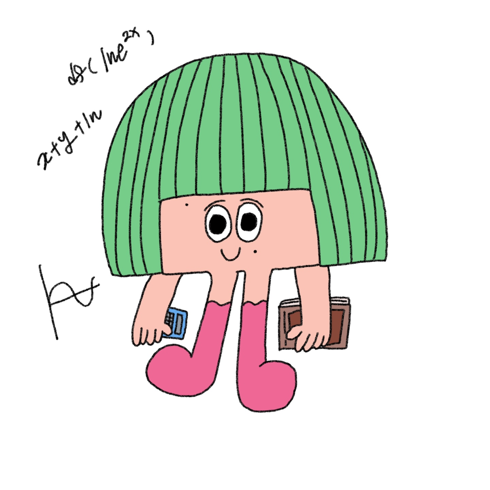

ISTJ - 수학교육과
- 내향적, 관찰적, 사고적, 판단적 성격특성을 가진 사람입니다.
- 이 사람들은 많은 외부 연결이 필요하지 않고 목표를 추구하는 개인주의적인 사고 방식을 갖는 경향이 있습니다. 이들은 호기심과 개인적인 기술로 삶에 참여하고 필요에 따라 접근 방식을 변경합니다.
- 수학교육과는 다변적인 학생 성향 및 교육정책에 부합하고 현대 교육관에 입각한 수학전문 교사를 양성하는데 그 목표를 두고 있습니다.
- 사회가 필요로 하는 올바른 가치관을 지닌 교원이 절대적으로 필요한 시점에서, 학문과 인성의 두 측면 모두를 겸비한 예비 교원을 양성함으로써 올바른 교육, 더 나아가 국가발전에 기여할 인재를 양성하는 데 주력하고 있습니다.